صحة
الصحة
كلام عادي عن النوم والمشي والميّة، وجواه أنواع الأكل. المقال مش كشف، ومتوقفش الدوا من نفسك. لو عندك مرض أو بتشرب دوا، اسأل الدكتور قبل ما تغيّر أكلك.
الكلام ده معلومة عامة، مش كشف. لو بتشرب دوا أو عندك مرض، اسأل الدكتور قبل ما تغيّر الأكل أو الدوا.
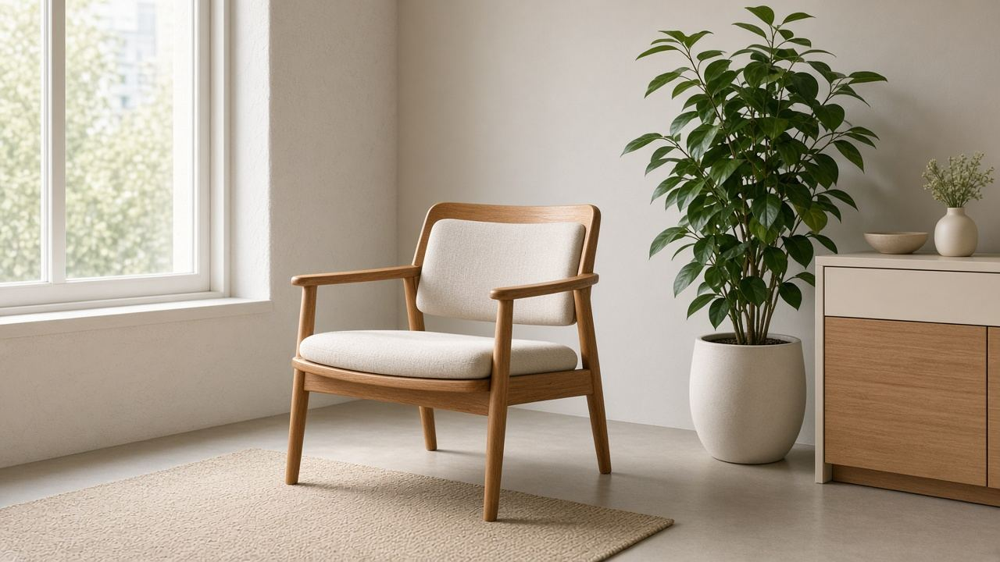
صحةإمتى العرض يستاهل طبيب أو إسعاف
علامات ما تتستناش بيها مقال: ألم صدر، ضعف مفاجئ، ضيق نفس، نزيف، وأفكار أذى. والباقي يتفرز بهدوء مش برعب.
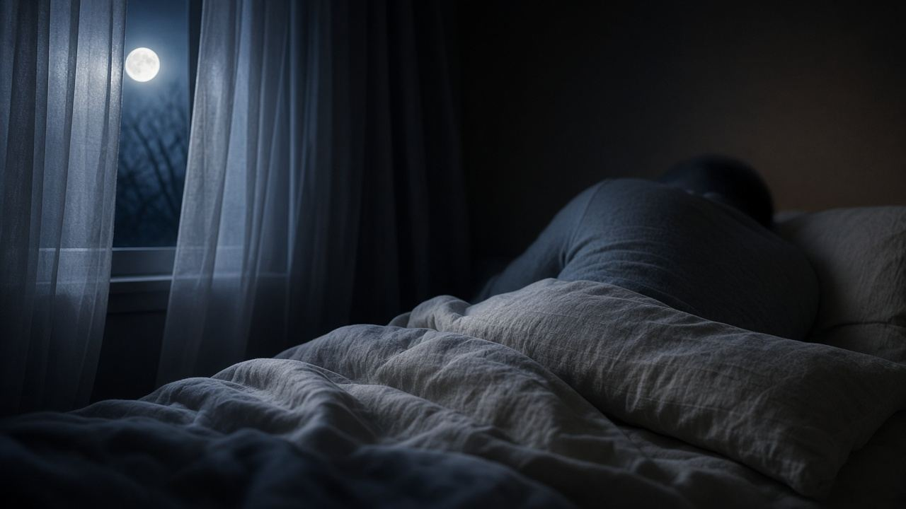
صحةالنوم: سبع ساعات للبالغ مش تحدي بطولة
البالغين غالبًا محتاجين سبع ساعات أو أكتر. الشاشة في السرير، والكافيين متأخر، والقيلولة الطويلة، بتكسّر الليل.
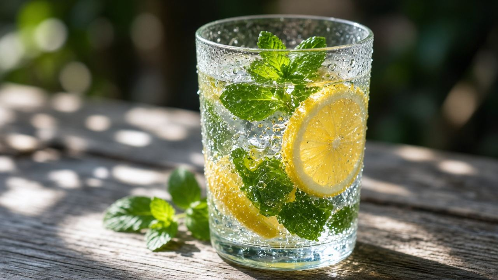
صحةالميّة: العطش مش قانون تمن كبايات
الاحتياج بيتغير مع الجو والحركة والأكل. لون البول دليل عملي، ومرضى القلب والكلى ليهم حد يحدده الطبيب.
صحةالحركة: ١٥٠ دقيقة في الأسبوع هدف للبالغين
توصية منظمة الصحة للنشاط المتوسط، وتمارين القوة مرتين، وأي حركة أحسن من لا شيء. مش لازم جيم قبل ما تمشي.
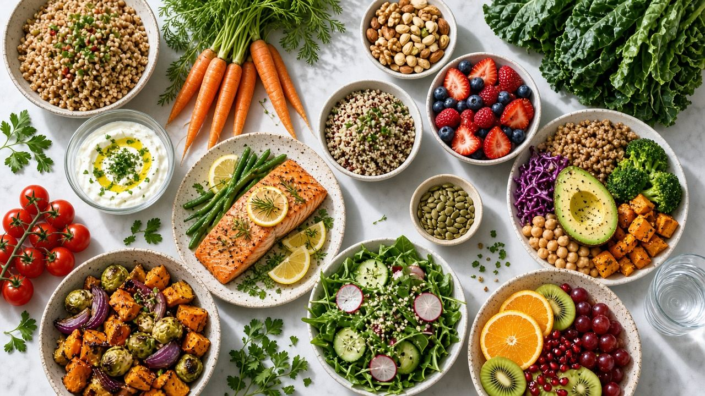
دايتأنواع الدايت: خريطة قبل ما تختار نمط أكل
الدايت نمط أكل يتكرر، مش عقوبة أسبوع. البحر المتوسط، والطبق، وداش، والنباتي، والصيام المتقطع، وليه الديتوكس مش نوع رابع.
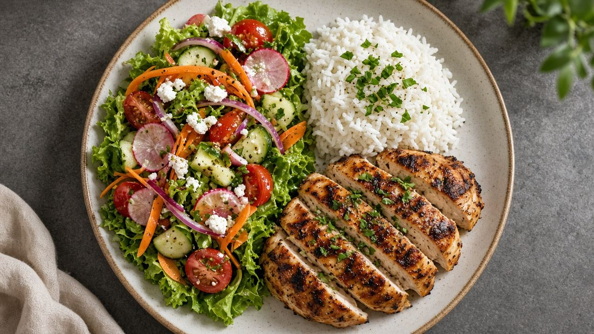
دايتالطبق المتوازن: نص خضار وربع بروتين وربع نشويات
نموذج طبق بسيط للغدا والعشا، من غير تطبيق سعرات. الخضار حجم، والبروتين شبع، والنشويات طاقة مش عدو.
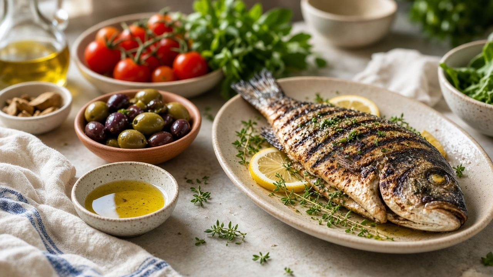
دايتنمط البحر المتوسط: أكل متكرر مش وصفة أسبوع
خضار وبقول وزيت زيتون وسمك ومكسرات، ولحم أحمر وحلويات أقل. نمط اتدرس على صحة القلب، ومش ماركة زيت.
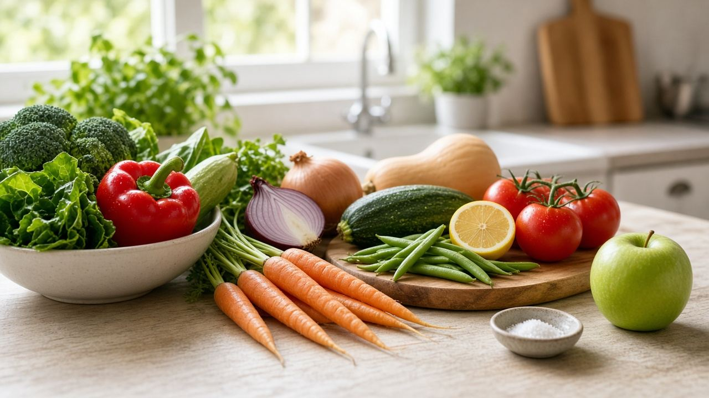
دايتداش والملح: الأكل اللي بيتقال إنه بيساعد الضغط
خضار وفاكهة وألبان قليلة الدسم وملح أقل. قياس الضغط عند الطبيب، والأكل مش بديل الدوا اللي اتوصف.
 دايت
دايتالأكل النباتي: بروتين متنوع، وB12 ما يتنسيش
النباتي ممكن يكفي لو البقول والبيض والألبان أو البديل المدعّم موجودين. النباتي مش نظام تخسيس تلقائي.
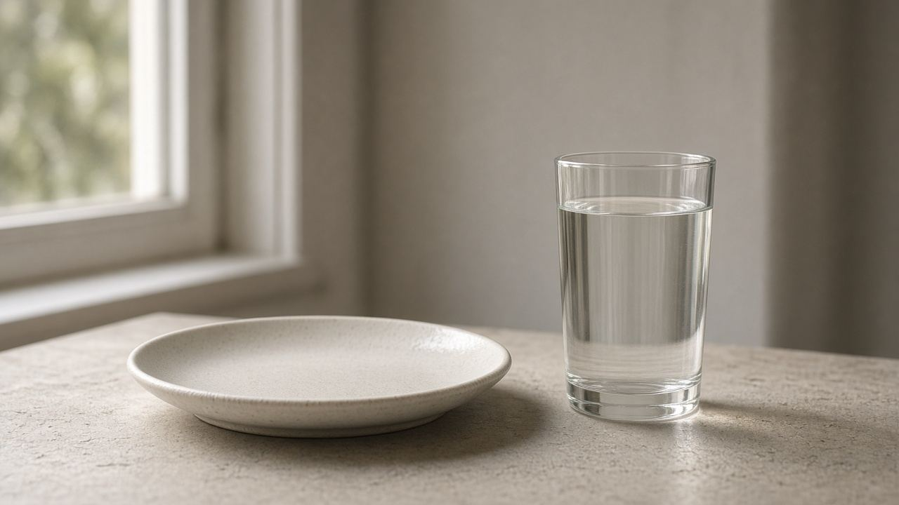
دايتالصيام المتقطع: تنظيم ساعات، ومين ما يجربوش
النمط الشائع ١٦ ساعة من غير أكل و٨ للأكل. مش علاج، ومش للكل: حمل، ورضاعة، واضطراب أكل، وأدوية سكر.
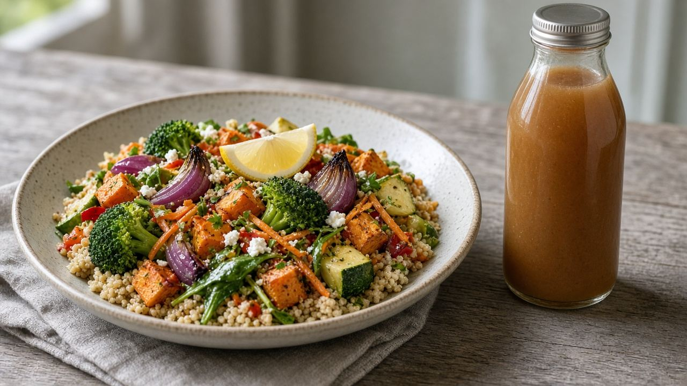
دايتالدايت الصارم والديتوكس: الوعد السريع بيرجع على الميزان
الأنظمة شديدة الانخفاض في السعرات بتتابع طبيًا. العصير ما بينضّفش الجسم، والكبد والكلى هما اللي بيعملوا الشغل ده.
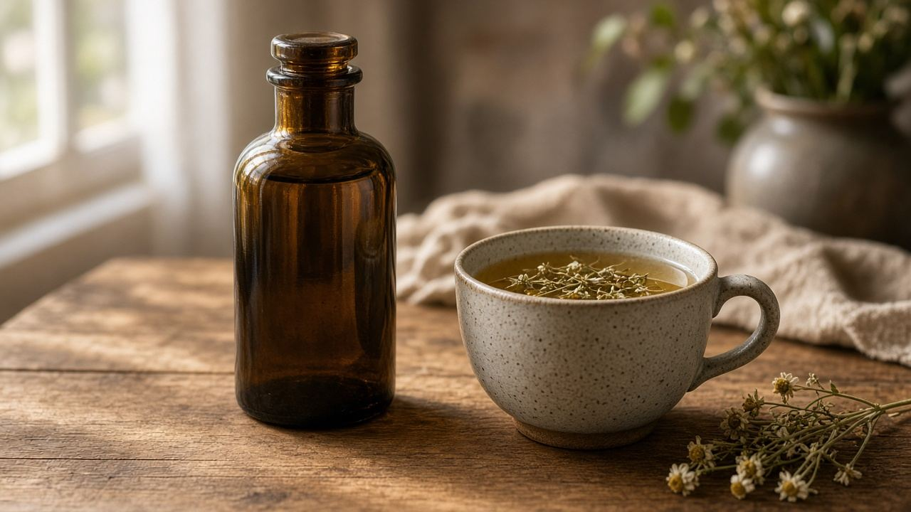
صحةالمضاد الحيوي مش علاج لكل سخونة
الرشح والإنفلونزا فيروسات. المضاد بيتاخد لعدوى بكتيرية يحدّدها الطبيب، والباقي من غير ما تكمل العلبة لو اتقال لك توقف.
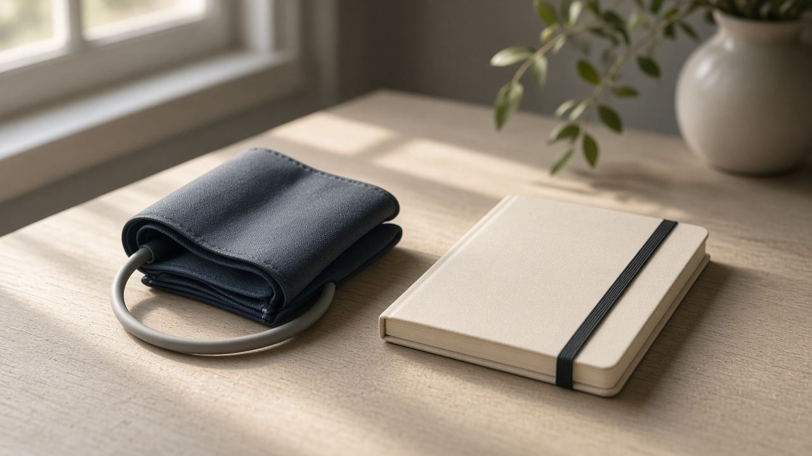
صحةالضغط والسكر: الرقم يتقاس، ما يتخلّنش
القياس في البيت أداة متابعة، والتشخيص عند الطبيب. الصداع مش مقياس ضغط، والعطش الشديد مع التبول علامة تتفحص.